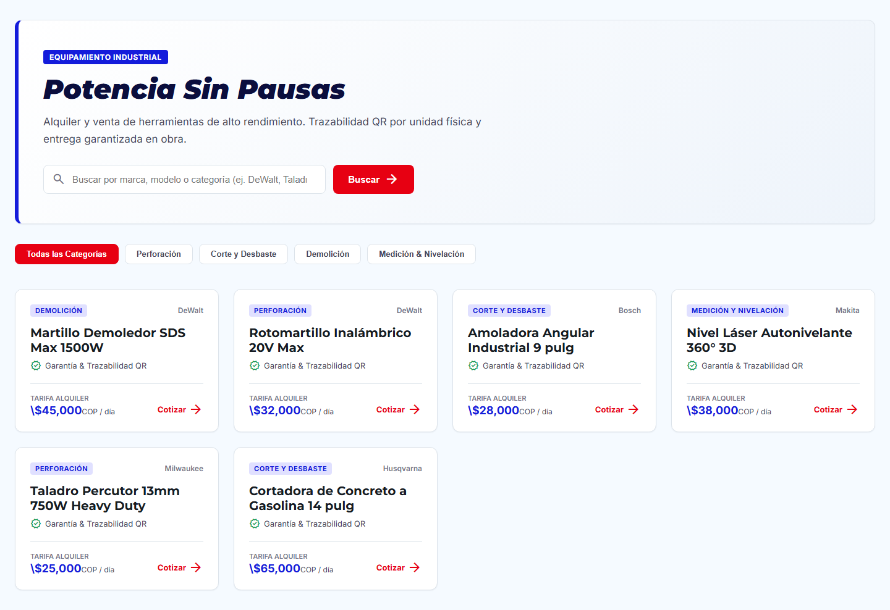
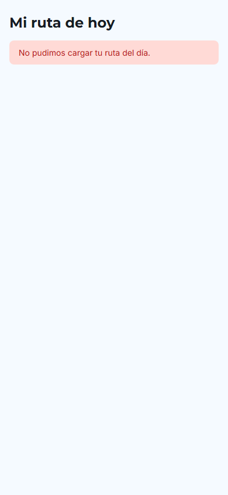
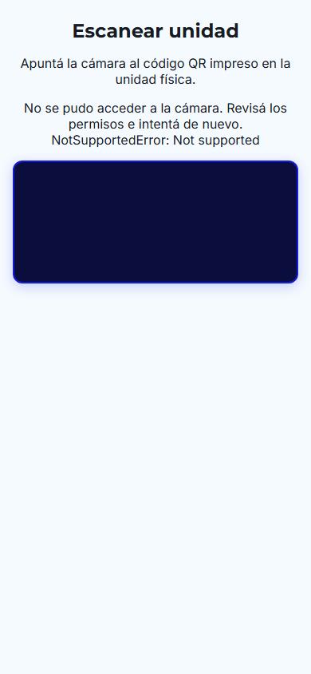
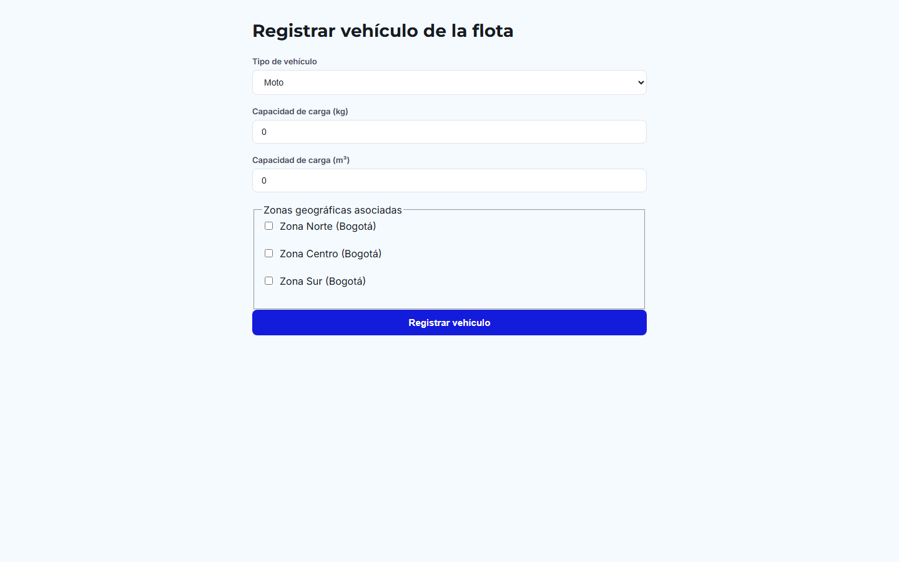

TOOLBOX JL
Plataforma Inteligente de Alquiler y Venta de Herramientas Eléctricas Pesadas con Agentes de IA y Arquitectura Limpia.
1. El Problema en Obra y la Solución ToolBox JL
❌ 1. Falta de Trazabilidad Unitaria
Pérdidas millonarias por extravío o cambio de equipos en obra. No se conoce qué unidad física específica tiene cada cliente.
❌ 2. Fricción y Cotizaciones Lentas
Procesos manuales para asesorar técnicamente según la tarea (potencia, voltaje, brocas) y calcular depósitos de garantía.
❌ 3. Logística y Moras Ineficientes
Rutas desordenadas, checklists en papel sin evidencia fotográfica y disputas por cobro de moras.
✅ Trazabilidad Serializada con QR
Cada unidad física tiene un código QR único que vincula su número de serie, cliente y registro de inspección.
✅ Conserje de Voz AI en Vivo
Agente WebRTC embebido en el portal que asesora técnicamente con grounding del catálogo real sin alucinar.
✅ PWA Logística + Ruteo Autónomo
Agente 1 optimiza rutas nocturnas; app móvil para conductor con checklist fotográfico e inspección digital.
2. Arquitectura de Software & Ecosistema Tecnológico
4 Microfrontends
Angular 19 + Native Federation
- Shell Host (Auth/Core)
- Portal Cliente (B2C)
- Panel Admin (BI)
- PWA Logística (Offline)
- UI-Kit compartido
Backend Modular
NestJS + Clean Architecture
- Dominio DDD desacoplado
- Contratos OpenAPI v3
- Catalog, Orders, Fleet, Analytics Modules
- Workers batch para moras
Data & Auth
Supabase (PostgreSQL)
- Row-Level Security (RLS)
- JWT con roles seguros
- Storage para evidencias
- Supabase Realtime
Infraestructura
Producción Multi-Cloud
- Vercel: SPAs desplegadas
- Railway: API y Workers
- GitHub Actions CI/CD
- 180 Tests en verde
3. Ecosistema de 3 Agentes de IA Especializados
🤖 Agente 1: Ruteo Nocturno
Optimización de Rutas Diarias
- Job batch que corre cada noche.
- Agrupa entregas y recolecciones por zonas geográficas.
- Usa Tool Calling tipado para consultar pedidos pendientes y asignar paradas al repartidor.
🤖 Agente 2: WhatsApp Multimodal
Asistencia Omnicanal
- Integración con WhatsApp Cloud API.
- Transcripción de notas de voz con Deepgram y síntesis con ElevenLabs.
- Atiende dudas y consulta estado de órdenes en tiempo real.
🤖 Agente 3: Conserje de Voz
Voz WebRTC en Vivo
- Embebido en el Portal del Cliente con LiveKit.
- Latencia bidireccional < 800ms.
- Grounding estricto: ejecuta
searchCatalog()y no inventa herramientas ni precios.
4. Demo en Vivo: Portal del Cliente & Catálogo

Puntos Clave a Demostrar:
- Identidad Industrial Racing: Paleta Brand Blue (
#141CDB) y Brand Red (#E70012) de Google Stitch. - Filtros por Categoría: Demolición, Perforación, Corte y Medición.
- Conserje de Voz AI: Demostración de consulta técnica sin alucinaciones.
- Cotizador Interactivo: Tarifa por días + Depósito de garantía reembolsable.
5. Demo en Vivo: PWA Logística y Trazabilidad QR


Innovación en Campo:
- Diseño Táctil Ergonómico: Touch targets $\ge 56$px pensados para celular en obra.
- Ruta Diaria Inteligente: Secuencia de paradas optimizadas por el Agente 1.
- Escáner QR Unitario: Registro del número de serie exacto de la herramienta física.
- Checklist Fotográfico: Evidencia del estado del equipo para evitar fraudes y calcular moras.
6. Demo en Vivo: Panel Administrativo & Dashboards de BI


Visibilidad Gerencial y Operativa:
- Dashboard de Ingresos (
/analitica/ingresos):
Desglose en tiempo real de ventas directas, tarifas de alquiler recaudadas y cobros por mora automáticos. - Dashboard de Utilización (
/analitica/utilizacion-productividad):
Tasa de utilización global de herramientas (84.5%), demanda por modelo y marcas líderes. - Productividad de Repartidores:
Tabla de cumplimiento de rutas, entregas y recolecciones finalizadas y porcentaje de puntualidad en obra. - Control de Flota y Envíos:
Monitoreo centralizado de despachos y registro de capacidad vehicular.
7. Calidad Verificada y Pipeline CI/CD en Producción
180 Tests Unitarios
100% SUCCESS Frontend
- Portal Cliente: 59
- Panel Admin: 43
- PWA Logística: 36
- Shell Host: 38
- UI-Kit: 4
Contratos OpenAPI
Validación Spectral
- openapi.yaml como single source of truth
- DTOs tipados compartidos
- Cero endpoints rotos
Pipeline CI/CD
GitHub Actions
- Turborepo Pipeline
- Lint, test y build automáticos
- PR #116 y #117 en verde
Publicado Vivo
Despliegue Multi-Cloud
- 4 SPAs en Vercel
- API y Jobs en Railway
- PostgreSQL en Supabase
¡Muchas Gracias!
Estamos listos para la sesión de preguntas y retroalimentación del jurado.
Enlaces Vivos del Proyecto:
• Shell Host: tool-box-jl-shell.vercel.app
• Portal Cliente: tool-box-jl-portal-cliente.vercel.app
• PWA Logística: tool-box-jl-pwa-logistica.vercel.app
• Panel Admin: tool-box-jl-panel-admin.vercel.app
• Repositorio: github.com/Xavierlop31/ToolBoxJL